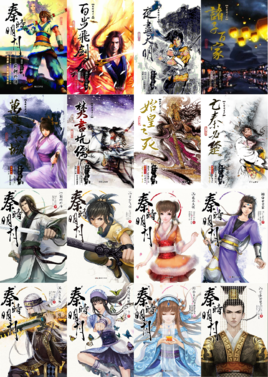

百步飞剑
乌江畔的一场厮杀，韩申与天下第一剑──
盖聂诛杀了秦王派出追杀荆天明的四大高手，但
韩申牺牲，盖聂也因此身受重伤。盖聂带着荆天明与女儿盖兰避居楚国蕲城东城外养伤，不料，却又被盖聂的仇家夏侯央找上门来，让人意外的是，这一帮秦王的爪牙，竟然还有盖聂最疼爱的师弟──卫庄。
当天下第一剑盖聂遇到同样施展“百步飞剑”的同门师弟卫庄，究竟──谁才会败在“百步飞剑”的招式下？木讷专情的盖聂与温柔深情的卫庄，他们之间的爱恨情仇，又会因为出现刁钻灵巧的女神医
端木蓉，有什么样的变化？
夜尽天明
一把神秘宝刀的武林传说。
据闻，有一把举世无双的匈奴宝刀──冷月霜刀，已经重现江湖；一直以来，有一个神秘的传说在匈奴族中流传着：这把刀是活的。
一位让人闻之色变的神秘女子？如今，此刀流落在“她”手上，她肌肤白皙似雪，包裹在一袭黑纱中，两眼看似无神，然而无论是谁和她的目光接触了，顿时有如寒风刺骨。此神秘女子出身神都九宫，她的下手之狠，用毒之残，正是江湖上人人闻之变色的下毒高手──“
月神乌断”。
一把刀、一个神秘传说，一位让人闻之色变的女子，荒凉的北地因此而风云变色、一触即发……
诸子百家
历史上空前绝后的诸子百家英雄大会儒墨斗法．
百家争鸣战线齐发．决胜濮阳一场英雄大会，诸子百家齐会桂陵，儒、墨、名家加上武林各派高手群集，要比武、斗智还是雄辩，才称得上是百家盟主？
齐威王二十六年，齐军为解赵国之急，出兵攻打魏都大梁，史称围魏救赵。此役的战场──桂陵，即为孙膑与庞涓第一次的战场相遇。庞涓深忌其师弟孙膑才智，设计刖其双足，而后却中了孙膑计策，自刎于马陵道。如今效命秦王的鬼谷四魈之一“
夏姬”──白芊红，为庞涓后代亦娴熟《
孙膑兵法》，除为前人雪耻而来，这位艳光逼人的绝色女子会以什么手段相抗诸子百家？
儒家大师端木敬德与
墨家钜子路枕浪，联手大斗崇尚法家的秦王与鬼谷四魈，这场战役有诸子百家、有武林高手、有秦军部队、有庞涓后人，究竟鹿死谁手？静观其变……
万里长城
一场撼动江湖的赌局，即将改变秦朝的命运。
一位文能留史、武转乾坤的墨家钜子与一位褒姒之貌、妲己之能的鬼谷女子
谁能改变历史？
鬼谷四魈之绝色美女夏姬──白芊红，应墨家钜子路枕浪之邀，于月圆之夜到访桂陵城。登时城内万头攒动却寂静无声，一为右手为文名留史册、左手能武扭转乾坤的墨家钜子路枕浪；另一为既有褒姒之貌，又拥妲己之能，倾城倾国只在弹指间的夏姬白芊红。两人初见，心里竟同时有相见恨晚的感慨。双方于席间斗智斗法，最终路枕浪与白芊红击掌为誓，他们立下什么誓？又赌下什么撼动江湖的局？
此时，桂陵城内白芊红派的鬼谷奸细，正不断地在城内掀起一波波惊涛骇浪；桂陵城外的儒家弟子刘毕，也带领了儒家弟子共六十四人组成的八佾剑阵，在白芊红返秦军大营的必经之处埋伏。八佾剑阵一旦发动便如海潮拍岸，几可说是毫无破绽，眼看著白芊红即将香消玉殒……
桂陵城内鬼谷奸细，桂陵城外八佾剑阵；月圆之夜一笑倾城，三月之约鹿死谁手……
焚书坑儒
月色淡淡 江湖不可名状
江水流转 谁胜谁负难算
情丝难斩 梦里提剑梦外漫漫
侠骨柔肠 秦时明月今世仰望
文能留史、武转乾坤的墨家钜子路枕浪，与褒姒之貌、妲己之能的鬼谷夏姬白芊红，撼动江湖的赌局，究竟谁改变了历史？
八年前，桂陵城破的那个夜晚。
荆天明不顾众人拦阻，斩断三道绳索，城门洞开，秦军蜂拥而入，桂陵城死伤惨重，荆天明生死未卜，高月不知所踪……
秦王君临天下，命书同文，车同轨，钱制相通，四海一统，霸业辉煌，号始皇帝。
八年后，秦始皇三十五年。
雪中茶栈内，暗藏杀机，千钧一发之际闯入的无赖乞丐自称岳皋──他是谁？从他身上为何引爆武林新风暴？
咸阳城外，鬼谷为谋夺白鱼玉坠所隐藏的惊世宝物，再次将魔爪伸向各大门派，儒家弟子尽数遭劫，一无遗漏，三月初五，坑杀活埋！
这一连串的纠葛，高潮迭起，如一长卷侠义恩仇录，在历史与读者的面前抖将开来……
生死两茫茫，八年的魂劳梦想，英雄美人会否再度重逢？
始皇之死
八年的魂劳梦想，荆天明与高月终于重逢，但高月却杀死了“自己”！
天明失去意识，堕入滚滚洪流，来到鬼谷。
鬼谷，一座回字型的繁华大城，却半面活著、半面死去。行踪成谜的神医端木蓉、月神乌断像活死人一般现身于此。为了白鱼玉坠，荆天明、刘毕与辛雁雁等江湖豪杰，与绝世高手徐让、卫庄等秦王人马，再次交锋！
天下即将大乱，巨大阴谋下，攸关整个帝国命运的梅花黑盒之谜即将揭晓……
谁，才是最后真正的王者？
亡秦必楚
激战
耗时八年秦时明月八部曲精彩最终回
盟主天下不死药英雄的决断！
高月的生死相随辛雁雁的柔情似水荆天明究竟情归何处？
始皇之死，亡秦必楚？
秦王、
项羽、荆天明，三强鼎立，请看今日之域中，竟是谁家之天下！
御赐的五色令牌，使荆天明大秦二皇子（养子）的身份曝光。
圣域里，荆天明与始皇“父子相会”，秦王目若豺狼，气势勃发：“仙药行将修成正果，届时我将不再是人间始皇，我将成为天上的王！而你，天明，鬼谷谷主、武林盟主，当然就是你！”
难道这鬼谷、这仙山、这一切的一切，是一场精心策划的局？
随着长生不老药炼成，项羽运筹演谋，徐让大开杀戒，群豪争相夺取、诛戮无道，武林弥漫着死亡气息……
